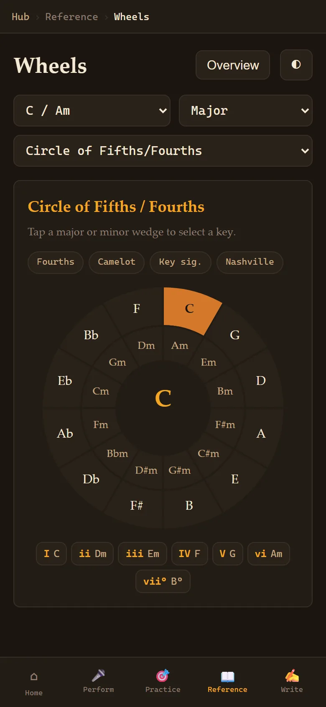
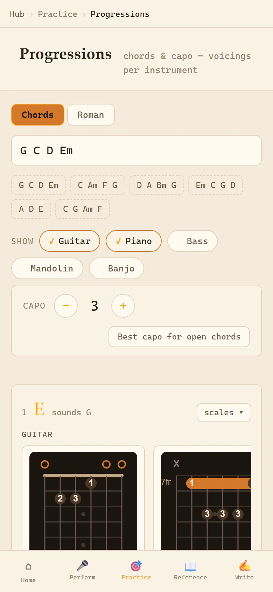
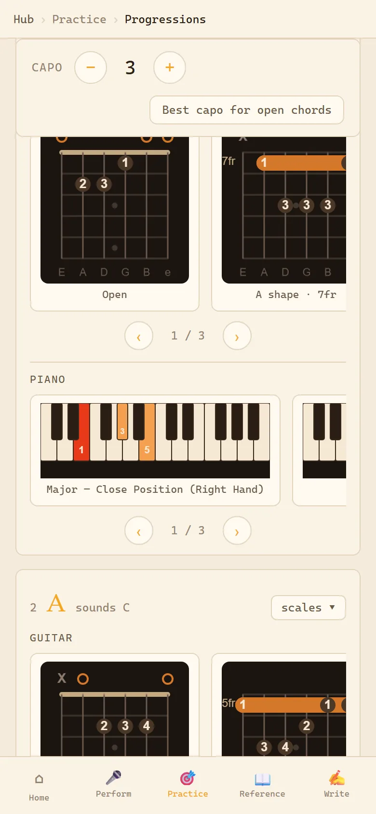
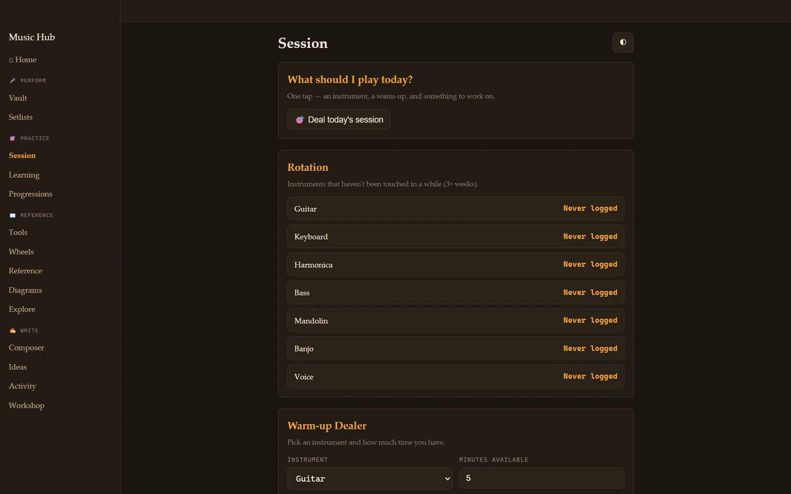
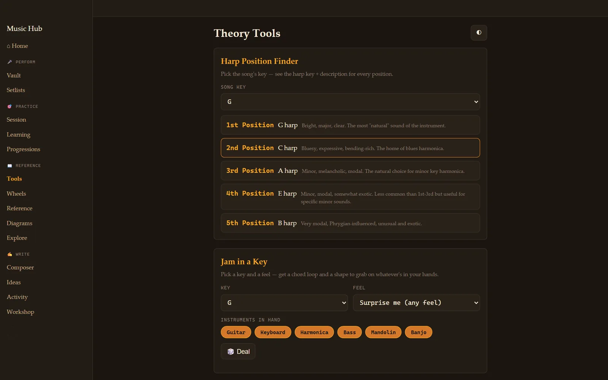

Music theory, for the instrument in your hands.
I play several instruments, want to get better at all of them, and eventually want to record an album. Theory books explain things for piano. So I built a hub that answers questions for whatever I'm holding: what does this progression look like on guitar with a capo on 3? On mandolin? On a harmonica in G?


Tap a key, see its family
This is a small version of one of the app's six theory "wheels." The Circle of Fifths arranges the 12 keys so that neighbours sound good together. Tap any key: its closest relatives light up, and you get the seven chords that belong to it.
In the full app the wheels also do intervals, modes, chord functions, and scale formulas, and each one works in every key.
Go on, tap one. It's live.

Type the chords. Get the fingers.
Type G C D Em, or the same thing in Roman numerals, I IV V vi. Pick your instruments and nudge the capo. The app draws where your fingers go for every chord on guitar and piano, and on bass, mandolin, banjo and more, across 18 tunings.
With the capo on 3, the shapes you play are E, A, B and C♯m, but it sounds in G. The app shows both, which is exactly the part that trips people up.

Practice, dealt like a hand of cards
"What should I play today?" is the question that kills practice. The session page deals one: a warm-up, a drill, and which instrument is up in the rotation, based on what's been neglected.
Around it are the practical pieces: a song vault with chord charts, set lists, a full-screen gig view, a learning board for each instrument (want → learning → gig-ready), and an export to Spotify.

Little tools for real jam problems
Which harmonica do I grab for a song in G? Where should the capo go so two guitars aren't playing the same shapes? Want to jam in E with whatever's lying around? Pick a key and a feel, and get a chord loop plus a shape to play on each instrument. Each is a small tool that answers in one screen.
There's also a composer page that records audio right in the browser, so an idea gets captured before it's gone.
Under the hood
- A voicing engine, not a picture library. Chord shapes are worked out from the notes for any fretted instrument and tuning, instead of being looked up from a fixed chart.
- An 8,310-video lesson catalog. Fifteen YouTube theory channels indexed and searchable, with no API key and no AI needed to search it.
- A tempo checker that listens to a recording played without a click and reports the BPM and where it drifted.
- An FL Studio file inspector that reads project files from the command line.
- The album plan. A seven-stage path from "set up the rig" to a mixed and mastered album, backed by six research reports. The first stage is done. The next one involves moving coats out of a closet to make a vocal booth.
- Plain HTML, CSS and JavaScript with a tiny Python server. It runs on a laptop at home and on my phone over a private network.